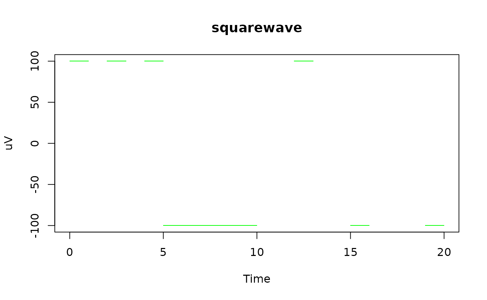

ieegio supports reading from multiple data formats, such
as EDF(+)/BDF(+), BrainVision,
BCI2000, BlackRock NEV/NSx. Most of these
readers have similar interface.
To start, please load ieegio. This vignette uses sample
data. Please feel free to replace the sample path with your own data
path.
library(ieegio)
edf_path <- ieegio_sample_data("edfPlusD.edf")Here is a basic example that reads in the sample EDF
data and creates a FileCache object that stores the signals
channel-by-channel for fast access:
edf <- read_edf(edf_path, verbose = FALSE)
print(edf)
#> <ieegio::EBDFCache>
#> File type : EDF+
#> Patient : X X X X
#> Recording : Startdate 10-DEC-2009 X X test_generator
#> Start time : 2009-12-10 12:44:02
#> Continuous recording : FALSE
#> Loaded channels : n=11
#> Signal channels : 1-11
#> Annotation channels :You can check header, channel table, and annotations via the following methods:
header <- edf$get_header()
str(header)
#> List of 12
#> $ file_type : chr [1:2] "EDF" "EDF+D"
#> $ version : chr "0"
#> $ is_plus : logi TRUE
#> $ header_length : int 3328
#> $ sampling_bits : num 16
#> $ recording_id : chr "Startdate 10-DEC-2009 X X test_generator"
#> $ patient : chr "X X X X"
#> $ continuous_recording: logi FALSE
#> $ n_records : int 11
#> $ record_duration : num 1
#> $ start_time : POSIXlt[1:1], format: "2009-12-10 12:44:02"
#> $ n_channels : int 12
#> - attr(*, "class")= chr "ieegio_edf_header_basic"
chan_tbl <- edf$get_channel_table()
print(chan_tbl, nrows = 2, topn = 2)
#> Channel Label Annotation TransducerType Unit Filter
#> <int> <char> <lgcl> <char> <char> <char>
#> 1: 1 squarewave FALSE uV
#> 2: 2 ramp FALSE uV
#> ---
#> 11: 11 sine 50 Hz FALSE uV
#> 12: 12 EDF Annotations TRUE
#> SamplesPerRecord SampleRate Slope Intercept DigitalMin DigitalMax
#> <num> <num> <num> <num> <num> <num>
#> 1: 200 200 0.03051804 0.01525902 -32768 32767
#> 2: 200 200 0.03051804 0.01525902 -32768 32767
#> ---
#> 11: 200 200 0.03051804 0.01525902 -32768 32767
#> 12: 51 51 1.00000000 0.00000000 -32768 32767
#> PhysicalMin PhysicalMax Comment
#> <num> <num> <char>
#> 1: -1000 1000
#> 2: -1000 1000
#> ---
#> 11: -1000 1000
#> 12: -1 1
annot <- edf$get_annotations()
annot
#> <fst file>
#> 11 rows, 4 columns (annot.fst)
#>
#> timestamp duration comments channel
#> <double> <double> <character> <integer>
#> 1 0 NA RECORD START 12
#> 2 2 NA 12
#> 3 4 NA 12
#> 4 5 NA 12
#> 5 6 NA 12
#> 6 7 NA 12
#> 7 8 NA 12
#> 8 9 NA 12
#> 9 12 NA 12
#> 10 15 NA 12
#> 11 19 NA 12You can also query a channel by calling the get_channel
method.
# get Channel 1
channel <- edf$get_channel(1)
channel
#> E/BDF(+) signal
#> Channel : 1
#> label : squarewave
#> Unit : uV
#> Sample rate: 200.0
#> Continuous : no
#> Number of timepoints: 2200
#> Time range : 0.0 to 20.0 secThe channel contains the following elements:
-
type: a character indicating the original file type; -
info: list of basic information such asChannelnumber,Label, acquisitionSampleRate, andUnitof the signals; -
continuous: a logical value whether the time frames are continuous; -
time: a numeric vector of time in seconds for each point; -
value: a numeric vector of the signal value, often converted from digital to analog trace.
Using such information, it is straightforward to plot the channel data:
plot(
x = channel$time, y = channel$value,
xlab = "Time", ylab = channel$info$Unit,
main = channel$info$Label,
type = "p", pch = ".", col = "green", lwd = 2
)